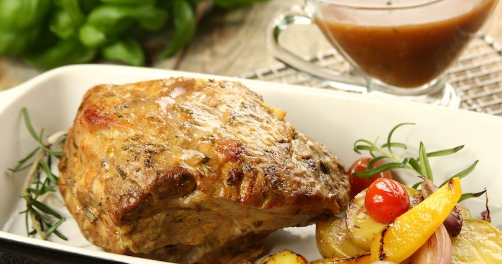

Pieczona karkówka w sosie rozmarynowym

Krok 1
Czosnek obierz i pokrój w plastry. Mięso ponakłuwaj cienkim nożem na około 2-3 cm, w powstałe „kieszonki” wsuń plaster czosnku. Czynność powtarzaj w miarę regularnie dookoła mięsa rozkładając cały czosnek.
Krok 2
Przygotuj marynatę do mięsa - przyprawę do mięs wymieszaj z 80 ml oleju, musztardą i posiekaną gałązką rozmarynu. Natrzyj nią mięso i zawiń w folię aluminiową. Karkówkę pozostaw co najmniej na jeden dzień w lodówce, aby marynata przeniknęła w głąb mięsa.
Krok 3
Po tym czasie mięso piecz w piekarniku rozgrzanym do 190°C przez około 120 minut. Po upieczeniu mięsa zbierz powstały sok - posłuży do przygotowania sosu.Krok 4
Na rozgrzanym tłuszczu podsmaż posiekaną w drobną kostkę szalotkę. Dodaj posiekany rozmaryn, wlej 200 ml ciepłej wody (razem z sokiem z pieczenia mięsa). Dodaj Sos do pieczeni ciemny Knorr, dzięki któremu sos będzie gęsty i dobrze doprawiony. Całość dokładnie wymieszaj. Wszystko razem gotuj dwie minuty. Mięso podawaj z sosem.